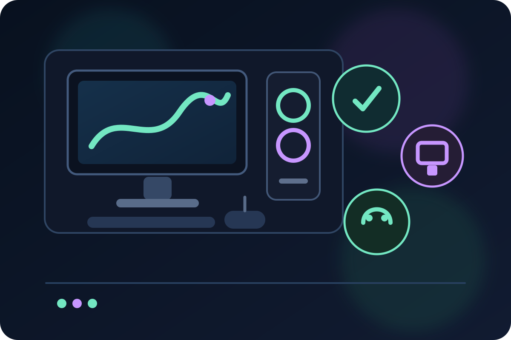

setup gamer
Setup gamer custo-benefício: onde investir primeiro
Guia direto para priorizar desempenho, monitor e conforto no setup gamer antes de gastar com extras, com comparações de produtos por perfil de uso.

Comece pelo que realmente limita a experiência
Defina os jogos principais, a resolução e a fluidez desejada. GPU, CPU, monitor e armazenamento devem ser avaliados como um sistema; o próximo investimento deve remover um gargalo observado, não seguir uma lista universal.
- jogos e resolução
- fluidez desejada
- gargalo real
- compatibilidade do sistema
Depois refine conforto e periféricos
Mouse, headset, teclado, ergonomia e estética entram depois do núcleo funcional. A escolha passa a ser por perfil de uso: conexão, peso, conforto, áudio, controle e organização — sempre com trade-offs explícitos.
- controle
- áudio
- ergonomia
- conectividade
Opções comerciais em validação
Os links permanecem desativados nesta prévia até os gates de segurança, destino e release serem concluídos.